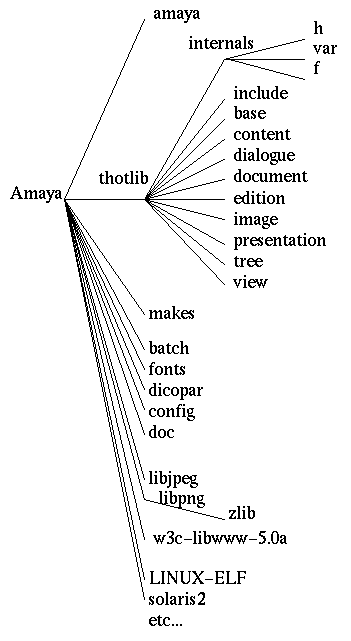

Below is the picture of the whole tree built from the source archives for Thot and Amaya. Since Amaya is an application built on top of the Thot library, one need first to extract the Thot source tree, and then graft the Amaya sources in the Thot tree.
We assume that all the archives needed have been fetched from W3C and INRIA
servers, namely and stored in /tmp :
thot-src-xxx.tar.gz(where xxx is the Thot
version number).
amaya-src-yyy.tar.gz(where yyy is the Amaya
version number).
Here is a short table of compatibles versions of Thot and Amaya :
| Thot (xxx) | Amaya (yyy) |
| 2.0 | 0.95 |
| 2.0a | 0.95a |
| 2.0b | 0.95b |
| 2.1 | 1.0 |
| 2.1a | 1.0a |
| 2.1b | 1.0b |
| 2.1c | 1.1 |
The tree is created by invoking the following commands in the directory of
choice (it will create the Thot sub-directory) :
gunzip -c /tmp/thot-src-xxx.tar.gz | tar xvf -
cd Thot
gunzip -c /tmp/amaya-src-yyy.tar.gz | tar xvf -
Be sure to have plenty of room available, compiling a debug version of Amaya can use up to 150 Mbytes of disk space. A non-debug one shouldn't use more than 60 Mbytes.

The tree is made of (from top to bottom):
amaya directory contains the amaya application
code.
thotlib directory contains the Thot library sources. The headers
defining the interfaces exported by the library are in the
include sub-directory.
makes subdirectory, it contains most of the Makefiles and
dependancies needed to rebuild amaya and the Thot compilers
from the sources.
batch directory contains the sources for the schema compilers.
font directory contains a few X-Windows specific fonts needed by
amaya.
dicopar directory hold the dictionnaries and hyphenation rules.
config contains all the dialogs messages files both for english
and french, as well as a few configuration files like the Thot registry (stored in file thot.ini).
doc contains the programming documentation for Thot library and
languages.
libjpeg and libpng contains the sources of two
graphic libraries needed by Thot toolkit.
w3c-libwww-5.0a is a slightly patched version of the latest
version of the WWW Library.
Amaya now uses autoconf to to set-up the compilation environment and build the binaries. See next step Compiling Amaya with autoconf for more informations on how to compile and install Amaya